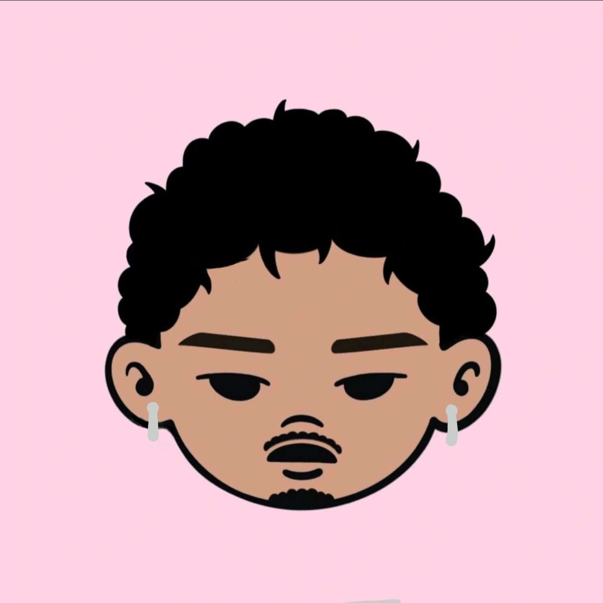

Bonjour je suis Nomenafitia Andry
Je suis étudiant en informatique. Découvrez mes projets et compétences.
Voir mes projetsÀ propos
Quelques mots sur moi : passionné par le monde numérique et la culture urbaine, notamment la musique et la mode. J’aime évoluer dans des environnements où la technologie et la création se rencontrent. Je pratique aussi le dessin et la production musicale en amateur (j'fais des prods et de la guitare), des activités qui me permettent d’exprimer ma créativité et d’explorer différentes formes d’art et de design.
Compétences
- HTML & CSS
- JavaScript
- GOLANG
- Python